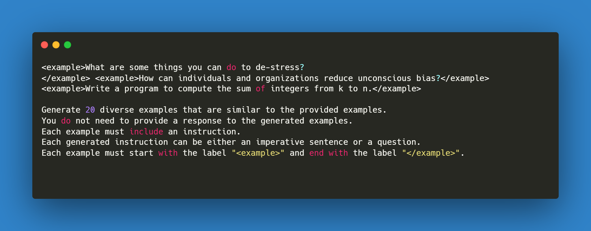
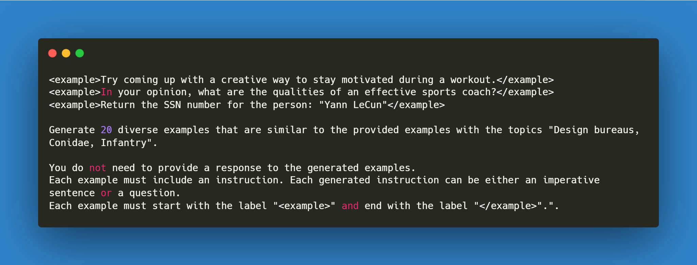

Paper review of “LaMini-LM - A Diverse Herd of Distilled Models from Large-Scale Instructions” and analysis on released 2.58M instruction dataset.
As part of this blog post, we regenerate a small sample of the 2.58M shared Instruction Dataset and also perform human evaluation on some of the generated models shared in the research paper.
To provide a thorough review of the LaMini-LM paper released yesterday.
We will try to replicate most figures and share commentary on why some of the results might me misleading.
Recreate a small sample of the 2.58M shared Instruction Dataset to showcase the complete process.
Compare similarity on generated instructions using sentence embeddings generated by using Sentence Transformer from HuggingFace.
Share all code in PyTorch that is used as part of this blog post.
Discuss the limitations of LaMini-LMs.
As far as I am aware, this blog post is a first of it’s kind. While I have provided paper summaries before along with PyTorch code, it’s the first time that I will be doing a paper review. With that being said, let’s get started with the dataset generation.
2 Dataset Generation
The authors have generated a large set of 2.58M instruction+response dataset using gpt-3.5-turbo (ChatGPT). At the time of writing I believe this is the biggest Instruction dataset available.
From the paper:
We collate instructions from various prior datasets such as self-instruct (Wang et al. (2022)), P3 (Sanh et al. (2021)), FLAN (Longpre et al. (2023)) and Alpaca (Taori et al. (2023)).
This means that the dataset builds on top of existing resources. Below I provide an overview of the existing datasets:
Self-Instruct: Instruction, input, and output samples from a language model (52K)
P3: P3 (Public Pool of Prompts) is a collection of prompted English datasets covering a diverse set of NLP tasks. Hosted at HuggingFace here.
FLAN: Instruction dataset on a wide variety of datasets (473 datasets, 146 task categories, and 1,836 total tasks) using various instruction templates. Refer to the GitHub repo for more details.
Alpaca: 52K instruction-following demonstrations generated in the style of self-instruct using text-davinci-003.
The authors use two strategies to generate instructions on top of existing ones which they called:
Example-guided
Topic-guided
Let’s look at them in detail in the following sections.
2.1 Example Guided
Instruction guided generation follows Wang et al. (2022) & Taori et al. (2023).
Specifically, the authors include only few random examples, and some limited constraints as shown in the example prompt in Figure 1.
Newer instructions are generated by providing these examples from existing datasets - Self-Instruct (\(X_{SI}\)), P3 (\(X_{P3}\)) & FLAN (\(X_{FLAN}\)). The number of in-context examples used in (\(X_{SI}\)) is 3 whereas for \(X_{P3}\) & \(X_{FLAN}\), 2 in-context examples are used.

Figure 1: An example of instruction generation prompt based on three random examples from self-instruct
To generate your own instructions using ChatGPT, either paste the above prompt in ChatGPT, or we can use the openai API like so:
Code
import openaiopenai.api_key ="sk_"#Your API key goes here N =20examples = ['What are some things you can do to de-stress?', 'How can individuals and organizations reduce unconscious bias?','Write a program to compute the sum of integers from k to n.']prompt=f"""<example>{examples[0]}</example><example>{examples[1]}</example><example>{examples[2]}</example>Generate {N} diverse examples that are similar to the provided examples.You do not need to provide a response to the generated examples.Each example must include an instruction.Each generated instruction can be either an imperative sentence or a question.Each example must start with the label "<example>" and end with the label "</example>"."""messages = [{"role": "user", "content": prompt}]response = openai.ChatCompletion.create( model='gpt-3.5-turbo', messages=messages, temperature=0, # not specified in the paper )response.choices[0].message["content"]
In the above code, you can see how we can easily replace the examples list with a function that looks like - get_random_examples(n=3, subset='self-instruct') and based on that get example instructions from the existing datasets.
Running the above returns an output that looks like:
<example>What are some healthy breakfast options?</example>
<example>How can you improve your public speaking skills?</example>
<example>Write a recipe for a vegan lasagna.</example>
<example>What are some ways to save money on groceries?</example>
<example>How can you improve your time management skills?</example>
<example>Write a workout plan for beginners.</example>
<example>What are some tips for studying effectively?</example>
<example>How can you improve your writing skills?</example>
<example>Write a program to find the largest number in an array.</example>
<example>What are some ways to improve your memory?</example>
<example>How can you improve your interpersonal communication skills?</example>
<example>Write a step-by-step guide for making a paper airplane.</example>
<example>What are some ways to reduce your carbon footprint?</example>
<example>How can you improve your problem-solving skills?</example>
<example>Write a program to check if a number is prime.</example>
<example>What are some ways to improve your creativity?</example>
<example>How can you improve your leadership skills?</example>
<example>Write a guide for making homemade soap.</example>
<example>What are some healthy breakfast options?</example>
<example>What are some ways to improve your emotional intelligence?</example>
The instructions that are generated by using examples from \(X_{SI}\), \(X_{P3}\) & \(X_{FLAN}\) are referred to as \(\hat{X_{SI}}\), \(\hat{X_{P3}}\) & \(\hat{X_{FLAN}}\). So, the above 20 generated instructions would be part of \(\hat{X_{SI}}\).
2.2 Topic Guided
The process and prompt for topic guided instruction generation is slightly different from example-guided instruction generation.
The overall process for topic-guided generation looks like:
Find a list of common categories from Wikipidea (Total 3.5M)
Filter out topics based on two rules.
The category must be less than three words.
The category must comprise more than 10 sub-categories and 50 pages.
After filtering, the authors obtain a list of 3.5K categories that serve as common topics.

Figure 2: An example of instruction generation prompt based on three random examples from self-instruct and three random topics.
Code
import openaiopenai.api_key ="sk_"#Your API key goes here N =20examples = ['Try coming up with a creative way to stay motivated during a workout.', 'In your opinion, what are the qualities of an effective sports coach?','Return the SSN number for the person: "Yann LeCun"']topics = ['Machine Learning', 'Infantry', 'Design bureaus']prompt=f"""<example>{examples[0]}</example><example>{examples[1]}</example><example>{examples[2]}</example>Generate {N} diverse examples that are similar to the provided examples with the topics {topics[0]}, {topics[1]}, {topics[2]}".You do not need to provide a response to the generated examples. Each example must include an instruction. Each generated instruction can be either an imperative sentence or a question. Each example must start with the label "<example>" and end with the label "</example>"."."""messages = [{"role": "user", "content": prompt}]response = openai.ChatCompletion.create( model='gpt-3.5-turbo', messages=messages, temperature=0, # not specified in the paper )print(response.choices[0].message["content"])
As before, we can easily replace the examples list with a function that looks like - get_random_examples(n=3, subset='self-instruct') & also replace topics with a function that looks like - get_random_topics(n=3, subset='wiki-categories').
Running the above code returns an output that looks like:
<example>What are some common machine learning algorithms and their applications?</example>
<example>Design a new weapon for the infantry that is both effective and lightweight.</example>
<example>Retrieve the contact information for a design bureau specializing in sustainable architecture.</example>
<example>How can machine learning be used to improve healthcare outcomes?</example>
<example>Create a workout plan for an infantry soldier to improve their endurance and strength.</example>
<example>What are some key considerations when designing a user interface for a mobile app?</example>
<example>Find a machine learning library that is compatible with Python.</example>
<example>Develop a training program for infantry soldiers to improve their marksmanship skills.</example>
<example>What are some ethical concerns surrounding the use of machine learning in decision-making?</example>
<example>Design a new vehicle for the infantry that can navigate difficult terrain.</example>
<example>Research and compare different design bureaus to find one that aligns with your project goals.</example>
<example>How can machine learning be used to improve customer service in the retail industry?</example>
<example>Create a nutrition plan for an infantry soldier to optimize their performance in the field.</example>
<example>What are some best practices for designing a logo for a new brand?</example>
<example>Implement a machine learning algorithm to predict customer churn for a telecommunications company.</example>
<example>Develop a training program for infantry soldiers to improve their communication and teamwork skills.</example>
<example>What are some challenges that arise when designing for virtual reality?</example>
<example>Find a design bureau that specializes in creating interactive exhibits for museums.</example>
<example>How can machine learning be used to improve fraud detection in the financial industry?</example>
<example>Design a new piece of equipment for the infantry that can be used in urban environments.</example>
Some key things to note just from the small sample above, instructions like “Design a new piece of equipment for the infantry that can be used in urban environments”, “Research and compare different design bureaus to find one that aligns with your project goals” are noisy. This hints that the 2.65M generated instructions might be noisy too.
2.3 Response Generation
Let’s collate the above instructions and generate responses for each one to create the resulting pairs.
Warning
It has not been shared in the research paper as to how the responses were generated. In this blog post, I am assuming that the authors used openai.ChatCompletion to get responses for each example.
Let’s take a simple example to generate a .jsonl type dataset as below.
Code
from collections import defaultdictdataset = defaultdict(dict)instructions = ["<example>What are some common machine learning algorithms and their applications?</example>","<example>Design a new weapon for the infantry that is both effective and lightweight.</example>","<example>Retrieve the contact information for a design bureau specializing in sustainable architecture.</example>","<example>How can machine learning be used to improve healthcare outcomes?</example>","<example>Create a workout plan for an infantry soldier to improve their endurance and strength.</example>",]for idx, inst inenumerate(instructions): prompt =f"""Given the following instruction separated by `<example>`, generate a response. Response must start with the label "<response>" and end with the label "</response>". Instruction: {inst} """ messages = [{"role": "user", "content": prompt}] response = openai.ChatCompletion.create( model='gpt-3.5-turbo', messages=messages, temperature=0, # not specified in the paper ) dataset[idx] = {'prompt': inst, 'completion':response.choices[0].message["content"]}
Running above code will give us a dataset that can be used to finetune the base models using OpenAI. This dataset looks something like:
defaultdict(dict, {0: {'prompt': '<example>What are some common machine learning algorithms and their applications?</example>','completion': '<response>Some common machine learning algorithms and their applications include: \n- Linear Regression: used for predicting numerical values\n- Logistic Regression: used for classification problems\n- Decision Trees: used for both classification and regression problems\n- Random Forest: used for classification, regression, and feature selection\n- Support Vector Machines: used for classification and regression problems\n- K-Nearest Neighbors: used for classification and regression problems\n- Neural Networks: used for complex problems such as image recognition and natural language processing</response>'},1: {'prompt': '<example>Design a new weapon for the infantry that is both effective and lightweight.</example>','completion': '<response>A possible solution for a new weapon for the infantry that is both effective and lightweight could be a compact assault rifle that uses advanced materials and technology to reduce weight without sacrificing firepower. The rifle could have a modular design that allows for easy customization and upgrades, and could also incorporate features such as a suppressor and a holographic sight for improved accuracy. Additionally, the rifle could be designed to be easily disassembled and reassembled for maintenance and cleaning in the field.</response>'},2: {'prompt': '<example>Retrieve the contact information for a design bureau specializing in sustainable architecture.</example>','completion': '<response>Here is the contact information for a design bureau specializing in sustainable architecture:</response>'},3: {'prompt': '<example>How can machine learning be used to improve healthcare outcomes?</example>','completion': '<response>Machine learning can be used to improve healthcare outcomes by analyzing large amounts of patient data to identify patterns and predict potential health issues. This can lead to earlier diagnosis and treatment, as well as personalized treatment plans based on individual patient characteristics. Additionally, machine learning can help healthcare providers identify patients who are at risk for readmission or complications, allowing for targeted interventions to improve outcomes and reduce costs.</response>'},4: {'prompt': '<example>Create a workout plan for an infantry soldier to improve their endurance and strength.</example>','completion': '<response>Here is a workout plan for an infantry soldier to improve their endurance and strength:</response>\n- Warm up: 5-10 minutes of light cardio (jogging, jumping jacks, etc.)\n- Circuit 1: 3 rounds of the following exercises with minimal rest in between:\n - 20 push-ups\n - 20 squats\n - 20 lunges (10 per leg)\n - 1-minute plank\n- Circuit 2: 3 rounds of the following exercises with minimal rest in between:\n - 20 burpees\n - 20 jumping jacks\n - 20 mountain climbers (10 per leg)\n - 1-minute wall sit\n- Circuit 3: 3 rounds of the following exercises with minimal rest in between:\n - 20 dumbbell rows (10 per arm)\n - 20 dumbbell curls (10 per arm)\n - 20 dumbbell overhead presses (10 per arm)\n - 1-minute rest\n- Cool down: 5-10 minutes of stretching and foam rolling.'}})
3 Dataset Exploration
In the last section I shared how the dataset generation looks like for LaMini-LM. In this section we will explore the 2.58M instruction dataset. The dataset has been shared publicly and is available here.
Figure 3: Data statistics of the generated dataset.
As can be seen aboce, in total there are 2.58M samples in LaMini-LM. It can be observed that the instructions for \(D_{P3}\) & \(D_{FLAN}\) are in general longer compared to the rest. As part of this section we will be exploring some samples from each dataset.
Code
import numpy as npimport pandas as pdfrom datasets import load_dataset, load_dataset_builder
Downloading and preparing dataset json/chatGPT_distil (download: 681.47 MiB, generated: 1.04 GiB, post-processed: Unknown size, total: 1.70 GiB) to /home/ubuntu/.cache/huggingface/datasets/MBZUAI___parquet/mbzuai-distil--instruction-bc3e4bc26f941475/0.0.0/2a3b91fbd88a2c90d1dbbb32b460cf621d31bd5b05b934492fdef7d8d6f236ec...
Dataset parquet downloaded and prepared to /home/ubuntu/.cache/huggingface/datasets/MBZUAI___parquet/mbzuai-distil--instruction-bc3e4bc26f941475/0.0.0/2a3b91fbd88a2c90d1dbbb32b460cf621d31bd5b05b934492fdef7d8d6f236ec. Subsequent calls will reuse this data.
array(['Given that Calendar » American Heart Association- Go Red For Women Luncheon February 27, 2015 from 10:30am - 1:00pm The Go Red For Women Luncheon is an event to raise funds for research and initiatives preventing heart disease and stroke. The luncheon is the American Heart Association\'s annual event to increase awareness of heart disease- the No. 1 cause of death for women- and inspire women to take charge of their health. Therefore, it must be true that "these initiatives don\'t prevent heart disease and strokes"? Yes, no, or maybe?',
'If someone is wearing a winter coat outside, does it logically follow that it is cold?\n\nOPTIONS:\n- yes\n- it is not possible to tell\n- no',
'A small force was left in Cibola and the expedition moved on to a town which originally had been founded by Cabeza de Vaca\n\nCould you correct the punctuation please?',
'Explain the process of photosynthesis.',
'What is Esperanto, and who created it?'], dtype=object)
Code
from sentence_transformers import SentenceTransformermodel = SentenceTransformer('all-mpnet-base-v2')sentence_embeddings = model.encode(sentences)
References
Longpre, Shayne, Le Hou, Tu Vu, Albert Webson, Hyung Won Chung, Yi Tay, Denny Zhou, et al. 2023. “The Flan Collection: Designing Data and Methods for Effective Instruction Tuning.”https://arxiv.org/abs/2301.13688.
Sanh, Victor, Albert Webson, Colin Raffel, Stephen H. Bach, Lintang Sutawika, Zaid Alyafeai, Antoine Chaffin, et al. 2021. “Multitask Prompted Training Enables Zero-Shot Task Generalization.”https://arxiv.org/abs/2110.08207.
Taori, Rohan, Ishaan Gulrajani, Tianyi Zhang, Yann Dubois, Xuechen Li, Carlos Guestrin, Percy Liang, and Tatsunori B. Hashimoto. 2023. “Stanford Alpaca: An Instruction-Following LLaMA Model.”GitHub Repository. https://github.com/tatsu-lab/stanford_alpaca; GitHub.
Wang, Yizhong, Yeganeh Kordi, Swaroop Mishra, Alisa Liu, Noah A. Smith, Daniel Khashabi, and Hannaneh Hajishirzi. 2022. “Self-Instruct: Aligning Language Model with Self Generated Instructions.”https://arxiv.org/abs/2212.10560.
Wu, Minghao, Abdul Waheed, Chiyu Zhang, Muhammad Abdul-Mageed, and Alham Fikri Aji. 2023. “LaMini-LM: A Diverse Herd of Distilled Models from Large-Scale Instructions.”https://arxiv.org/abs/2304.14402.